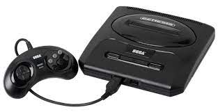
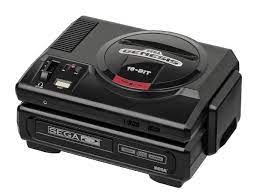
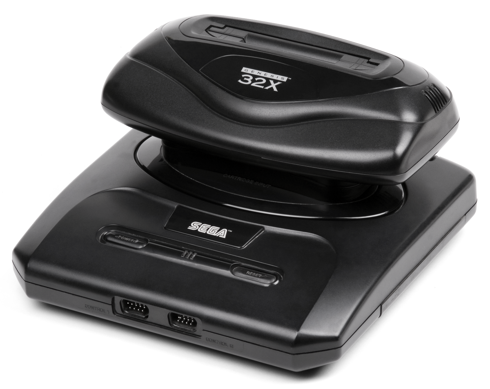

Хто така SEGA?
Sega Corporation - міжнародна компанія, що виробляє відеоігри та (до 2001 року) обладнання для них. Основний офіс Sega знаходиться у спеціальному районі Токіо Сінагава . Філія Sega of America знаходиться в Ірвайні (Каліфорнія), де займаються розповсюдженням ігор та автоматів у країнах Північної Америки . Офіс Sega Europe розташований в Брентфорді (передмістя Лондона ), Sega Publishing Korea - в Сеулі .
Компанія Sega була заснована 3 червня 1960 року американськими бізнесменами Мартіном Бромлі та Річардом Стюартом під назвою Nihon Goraku Bussan . Незабаром після цього компанія придбала активи свого попередника фірми Service Games of Japan. Через п'ять років після придбання компанії Rosen Enterprises, імпортера аркадних ігор, вона стала називатися Sega Enterprises, Ltd. Sega розробила свою першу аркадну гру Periscope [en] у 1966 році. В 1969 Sega була продана корпорації Gulf and Western Industries [en] . Після спаду в аркадному бізнесі на початку 1980-х років Sega почала розробляти ігрові приставки, починаючи з SG-1000 та Master System, Але їй довелося боротися з суперниками, такими як Nintendo Entertainment System . У 1984 році керівники Sega Девід Розен та Хаяо Накаяма очолили викуп компанії керівництвом за фінансової підтримки CSK Corporation.
У 1988 році Sega випустила свою наступну ігрову систему, Sega Mega Drive . Mega Drive важко конкурувала в Японії, але здобула успіх за кордоном після виходу гри Sonic the Hedgehog в 1991 році і ненадовго обійшла свого головного конкурента в США, Super Nintendo Entertainment System . Пізніше протягом десятиліття Sega зазнала кількох комерційних невдач, таких як 32X , Saturn та Dreamcast . У 2001 році Sega припинила виробництво ігрових систем, щоб стати стороннім розробником та видавцем, а в 2004 році була придбана корпорацією Sammy Corporation [en]. За роки, що минули після придбання, Sega стала більш прибутковою. Компанія Sega Holdings Co. Ltd. була створена в 2015 році, потім Sega Corporation була перейменована на Sega Games Co., Ltd. , А її підрозділи аркад, розваг та іграшок були виділені в інші компанії. У 2020 році Sega Games і Sega Interactive були об'єднані та перейменовані назад у Sega Corporation .
Будинок компанії SEGA
Концепти Соніка
Консолі від SEGA
SEGA Genesis(Mega Drive)

Sega Genesis , відома як Mega Drive за межами Північної Америки, є 16-розрядною домашньою відеоігровою консолью четвертого покоління , розробленою та проданою Sega . Genesis була третьою консоллю Sega і наступником Master System . Sega випустила його в 1988 році в Японії як Mega Drive, а в 1989 році в Північній Америці як Genesis. У 1990 році він був розповсюджений як Mega Drive компанією Virgin Mastertronic в Європі, Ozisoft в Австралії та Tec Toy в Бразилії. У Південній Кореї він поширювався Samsung як Super Gam*Boy , а пізнішеСупер Аладдін Хлопчик .
Розроблена командою R&D під керівництвом Хідекі Сато та Масамі Ішікава, Genesis була адаптована з аркадної плати Sega System 16 , зосереджена на процесорі Motorola 68000 як центральний процесор , Zilog Z80 як звуковий контролер і відеосистема, що підтримує апаратні спрайти . плитки та прокрутка. Він відтворює бібліотеку з понад 900 ігор на картриджах на основі ПЗУ . Було випущено кілька доповнень, включаючи Power Base Converter для ігор Master System. Він був випущений в кількох різних версіях, деякі створені третіми сторонами. Sega створила два мережеві служби для підтримки Genesis: Sega Meganetі Sega Channel .
У Японії Mega Drive не показав себе двох основних конкурентів, Nintendo Super Famicom і NEC PC Engine , але досяг значних успіхів у Північній Америці, Бразилії та Європі. Його успіху сприяла бібліотека портів аркадних ігор , популярність серії Sonic the Hedgehog від Sega , кілька популярних спортивних франшиз та агресивний молодіжний маркетинг , який позиціонував її як класну консоль для підлітків. Північноамериканський випуск Super Nintendo Entertainment System у 1991 році спричинив запеклу боротьбу за частку ринку в Сполучених Штатах та Європі, відому як « консольна війна ».Це привернуло увагу до індустрії відеоігор, і Genesis і кілька його ігор привернули юридичну експертизу з питань, пов’язаних із зворотним проектуванням та насильством у відеоіграх . Суперечки навколо таких ігор , як Night Trap і Mortal Kombat , спонукали Sega створити Раду з оцінки відеоігор , попередницю Ради з оцінок розважального програмного забезпечення .
По всьому світу було продано 30,75 мільйона одиниць Genesis від першої виробника.
SEGA SD

Sega Mega-CD ( яп. MegaCD Мега Сі: Ді:) - доповнення до ігрової приставки Sega Mega Drive від компанії Sega , випущене в рамках четвертого покоління ігрових систем . У Північній Америці система називалася Sega CD . Вона була випущена в Японії 12 грудня 1991, в Північній Америці - 15 жовтня 1992 і в Європі - 2 квітня 1993 року. Пристрій покращував можливості Mega Drive та додавав можливість програвати ігри, записані на компакт-диску , слухати аудіодиски та запускати диски формату CD+G.
Основною перевагою використання технології компакт-дисків стало збільшення об'єму, доступного для зберігання даних, що дозволило іграм збільшитися в розмірах майже 320 разів у порівнянні з картриджами для Mega Drive. Ця перевага призвела до того, що для приставки випускалися full motion video ігри , такі як Night Trap, яка викликала розбіжності навколо неї і стала предметом слухань у Конгресі з питань насильства у відеоіграх. Компанія Sega розробила приставку у партнерстві з JVC та відмовлялася консультуватися зі своїм американським підрозділом до завершення проекту. Американському підрозділу довелося зібрати свої екземпляри з різних компонентів, щоб отримати робочий прототип. Приставка неодноразово перепроектувалася та перевидавалася компанією Sega та ліцензованими сторонніми розробниками.
Бібліотека ігор Sega CD включала як відомі і добре прийняті ігри, такі як Sonic CD , Lunar: The Silver Star , Lunar: Eternal Blue , Popful Mail і Snatcher , так і безліч портів з Genesis і погано прийнятих критикою FMV-ігор. До березня 1996 було продано 2,24 мільйона одиниць Sega CD, після чого Sega зняла систему з виробництва, щоб зосередитися на розробці Sega Saturn . Ретроспективні думки про систему були неоднозначними, оглядачі хвалили деякі ігри та функціонал, але також і критикували її за нестачу глибоких ігор, високу ціну та відсутність підтримки з боку Sega.
SEGA 32X

Sega 32X — дополнение для игровой приставки Sega Mega Drive. 32X, получившая кодовое название «Project Mars», была разработана для расширения возможностей Mega Drive и служила переходной приставкой к 32-битной эре вплоть до выхода Sega Saturn. Независимо от Mega Drive, 32X использует собственные игровые картриджи и имеет собственную библиотеку игр. Она распространялась под названиями Super 32X в Японии, Genesis 32X в Северной Америке, Mega Drive 32X в странах, использующих систему PAL, и Mega 32X в Бразилии.
Представленная компанией Sega на выставке Consumer Electronics Show в июне 1994 года, 32X была представлена как недорогой вариант для потребителей, желающих играть в 32-битные игры. Она была разработана в ответ на Atari Jaguar и из-за опасений, что Saturn не выйдет на рынок к концу 1994 года. Хотя она была задумана японским отделением Sega как новая, самостоятельная приставка, по предложению руководителя Sega of America Джо Миллера и его команды, она стала дополнением к Mega Drive и стала более мощной. Окончательный проект содержал два 32-битных центральных процессора и графический процессор для работы с трёхмерной графикой.
Так как Sega обьявила что в Японии 32X выйдет одновременно с Saturn, дополнение не смогло привлечь сторонних разработчиков видеоигр и потребителей. Усилия Sega, направленные на поспешный выпуск 32X на рынок, сократили время, отведённое на разработку игр, что привело к созданию слабой библиотеки из 40 игр, которые не полностью использовали аппаратное обеспечение устройства. Sega произвела 800 000 экземпляров 32X и продала примерно 665 000 единиц к концу 1994 года. Остальные экземпляры продавались с большими скидками до тех пор, пока в 1996 году Sega не прекратила выпуск 32X, переключив своё внимание на Saturn.
32X считается коммерческим провалом. Первоначальный приём был положительным, обозреватели подчёркивали низкую цену и расширение возможностей по сравнению с Mega Drive. Однако более поздние отзывы были в основном негативными из-за небольшой библиотеки игр, неудачного выбора времени выхода на рынок и фрагментации рынка приставки Mega Drive.
SEGA SD
Sega Mega-CD ( яп. MegaCD Мега Сі: Ді:) - доповнення до ігрової приставки Sega Mega Drive від компанії Sega , випущене в рамках четвертого покоління ігрових систем . У Північній Америці система називалася Sega CD . Вона була випущена в Японії 12 грудня 1991, в Північній Америці - 15 жовтня 1992 і в Європі - 2 квітня 1993 року. Пристрій покращував можливості Mega Drive та додавав можливість програвати ігри, записані на компакт-диску , слухати аудіодиски та запускати диски формату CD+G.
Основною перевагою використання технології компакт-дисків стало збільшення об'єму, доступного для зберігання даних, що дозволило іграм збільшитися в розмірах майже 320 разів у порівнянні з картриджами для Mega Drive. Ця перевага призвела до того, що для приставки випускалися full motion video ігри , такі як Night Trap, яка викликала розбіжності навколо неї і стала предметом слухань у Конгресі з питань насильства у відеоіграх. Компанія Sega розробила приставку у партнерстві з JVC та відмовлялася консультуватися зі своїм американським підрозділом до завершення проекту. Американському підрозділу довелося зібрати свої екземпляри з різних компонентів, щоб отримати робочий прототип. Приставка неодноразово перепроектувалася та перевидавалася компанією Sega та ліцензованими сторонніми розробниками.
Бібліотека ігор Sega CD включала як відомі і добре прийняті ігри, такі як Sonic CD , Lunar: The Silver Star , Lunar: Eternal Blue , Popful Mail і Snatcher , так і безліч портів з Genesis і погано прийнятих критикою FMV-ігор. До березня 1996 було продано 2,24 мільйона одиниць Sega CD, після чого Sega зняла систему з виробництва, щоб зосередитися на розробці Sega Saturn . Ретроспективні думки про систему були неоднозначними, оглядачі хвалили деякі ігри та функціонал, але також і критикували її за нестачу глибоких ігор, високу ціну та відсутність підтримки з боку Sega.
SEGA dreamcast
Dreamcast ( яп. DreamCast Dorīmukyasuto ) - домашня ігрова приставка , випущена компанією Sega 27 листопада 1998 в Японії, 9 вересня 1999 в Північній Америці і 14 жовтня 1999 в Європі. Вона була першою в шостому поколінні ігрових систем , і передувала PlayStation 2 від Sony , GameCube від Nintendo та Xbox від Microsoft . Dreamcast стала останньою домашньою ігровою системою Sega, завершивши вісімнадцятирічну історію компанії на ринку консолей.
На відміну від дорогої та невдалої Sega Saturn , Dreamcast була розроблена з метою зниження витрат за рахунок «готових» компонентів, таких як центральний процесор Hitachi SH-4 та графічний процесор NEC PowerVR2 . Випущена в Японії і стриманий прийом, що отримала там, Dreamcast успішно вийшла на ринок США завдяки масштабній маркетинговій кампанії, але інтерес до системи неухильно знижувався в міру того, як Sony створювала галас навколо майбутньої PlayStation 2. Незважаючи на кілька зниження цін поспіль, продажі не виправдали очікувань Sega, і компанія продовжувала зазнавати значних фінансових втрат. Після зміни керівництва Sega припинила випуск Dreamcast 31 березня 2001 року, відмовившись від бізнесу з випуску ігрових приставок і перепрофілювавшись у видавця ігор. Загалом у світі було продано 9,13 мільйонів екземплярів Dreamcast.
На початок